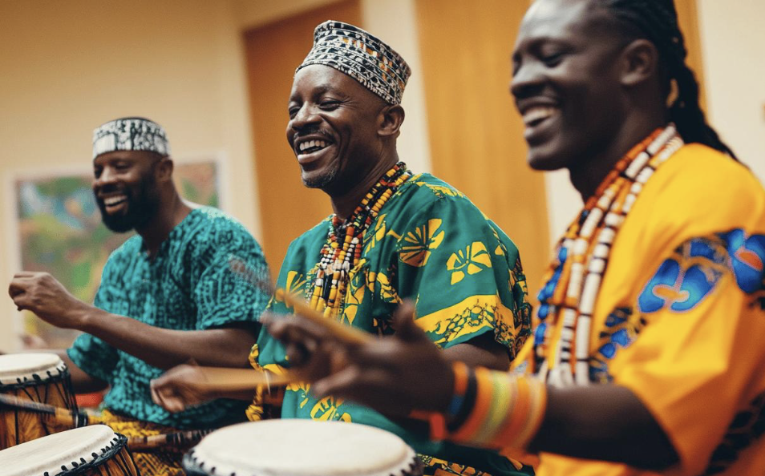
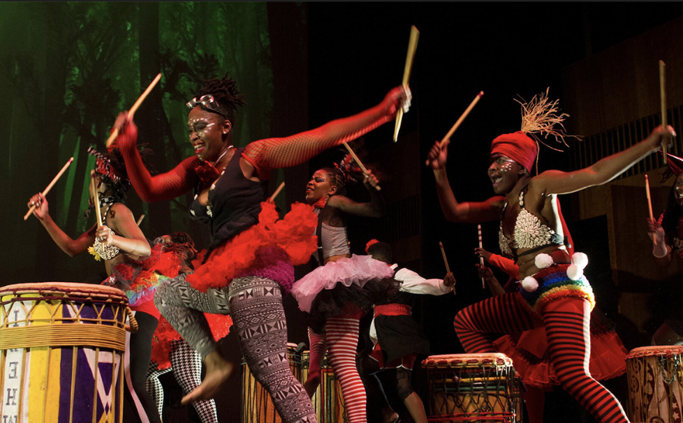

Cultural Resilience .
Strength and Creativity in the Black Community
Black History Month Project
Scroll DownWhat Our Project Conveys


Our project highlights the ways Black communities have preserved identity and built strength through culture. Even during times of oppression and injustice, creativity stayed alive through song, style, movement, and food. These traditions were never just trends. They carried memory, resistance, and pride from one generation to the next!
We want our classmates and community to understand that cultural expression is a form of resilience. It protects stories that history books often leave out and creates spaces where community can grow. By learning about music, dance traditions, hair and fashion, and food traditions, we see how culture becomes a living archive of survival and joy!
Return to top and select an area to learn about!
Editors & Writers: Haylie Mignott, Jaime Milton, Nia Kostyo, and Giana Sacks!